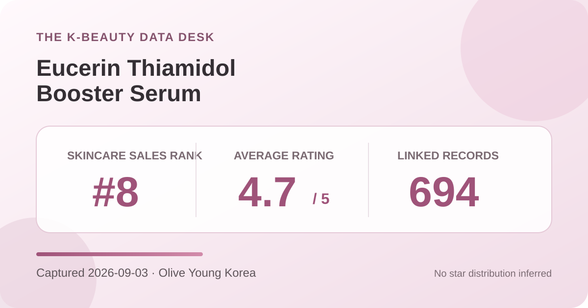
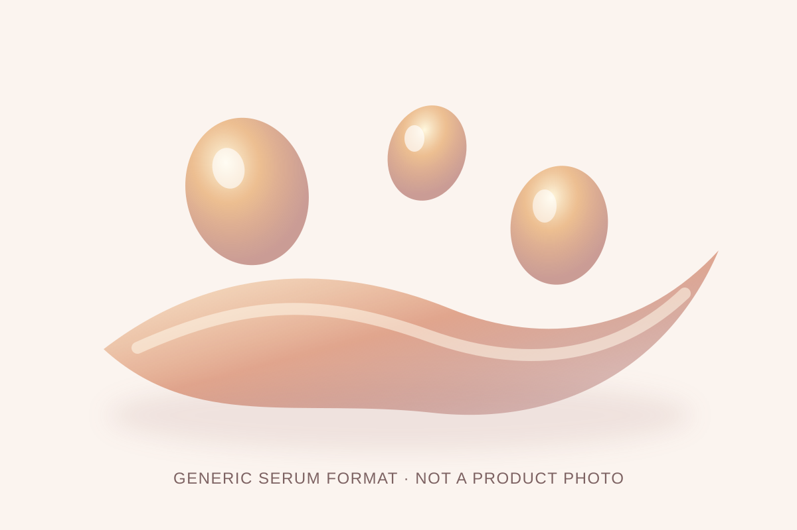

Data captured September 3, 2026. This article uses only the retailer's displayed product title, skincare sales rank, aggregate rating, linked review count, availability, and dated pack and price display. No individual review, reviewer name, product photograph, or user photograph is reproduced or translated. I did not test the product.

The short version: the promotional Eucerin Thiamidol Booster Serum listing ranked eighth in the skincare sales list captured on Olive Young Korea and displayed 4.7 out of 5 from 694 linked review records. The item was temporarily sold out. These are storefront signals, not proof that the serum changes pigmentation, brightens skin, prevents marks, or suits every user.
The narrow conclusion is favorable: within Olive Young Korea's rating system, 694 linked records produced a one-decimal display of 4.7 on capture day. That is a useful indication of the direction of sentiment inside this listing. It does not say what every contributor expected, how consistently the product was used, or whether every linked record concerns the exact 30 ml plus 7 ml promotional configuration currently displayed.
The captured view did not expose a trustworthy five-, four-, three-, two-, and one-star breakdown. Several very different distributions can round to the same 4.7 average, and a one-decimal display hides additional precision. I therefore do not invent a five-star percentage or reverse-engineer missing buckets. The count and average are also a dated snapshot; later reviews, merged options, or retailer changes can alter both.
A 694-record base is large enough that one additional rating would have little effect on the displayed average, but volume does not remove selection effects. The pool consists of people linked to one retailer who chose to leave feedback. Scores may reflect delivery, packaging, gifts, price, incentives, expectations, option changes, or product experience. A retail sample is not a randomized trial or a representative survey of everyone who might use the serum.
No reliable star-by-star distribution was available in the captured review view. The review tab confirmed the linked record count but did not provide a separate stable rating breakdown that could be reported without inference. Likewise, no dependable skin-type, concern, or irritation survey panel was available for this listing in the captured state. Rather than borrow numbers from another Eucerin item, another market, or a search result, this analysis leaves those fields unknown.
This matters because the average cannot reveal the shape of disagreement. A 4.7 can arise from a tightly clustered set of high scores or from a high five-star share mixed with a smaller but meaningful low-score tail. Without the actual buckets, neither pattern should be claimed. The lack of a displayed poll also means there is no sound basis for assigning the product to a skin-type representation lane or calling it gentle, strong, drying, or soothing.

The retailer categorizes the item as a serum, but I did not open, smell, spread, or layer it. Viscosity, slip, absorption time, finish, residue, scent, pilling, and compatibility with sunscreen or makeup remain unknown here. The local illustration communicates only a generic liquid-serum format and deliberately avoids copying the actual product image, package design, brand marks, or customer photographs.
The listing name does not establish how much to apply, how often to use it, where it belongs in a routine, or which products should be combined with it. Those decisions should follow the current regional label and manufacturer directions for the item received. Introducing one product at a time can make an unwanted change easier to identify, but that practice does not guarantee tolerance or safety.
“Thiamidol Booster Serum” is the product identity used in the Korean storefront. It is not, by itself, a statement of concentration, delivery, stability, penetration, or clinical outcome. Neither the 4.7 rating nor the rank-eight position validates a pigmentation or brightening claim. The retailer aggregates did not measure spot area, pigment index, skin tone, recurrence, irritation, or any other clinical endpoint.
No percentage or ingredient dose is inferred here. A branded ingredient name can help identify a product line, but it cannot substitute for the complete ingredient list, current directions, warnings, or a study report that matches the exact formula and use conditions. A similarly named product sold outside Korea may differ in formula, labeling, size, seller, or bundle, so market equivalence should not be assumed.
Rank eight means this promotional listing had strong current sales momentum inside Olive Young Korea's skincare ranking at one moment on September 3. It does not mean eighth-best serum, eighth-best option for marks, or a better formula than every item below it. The page displayed a September promotion, a bundled 7 ml serum, a discount, delivery badges, and temporary unavailability. Those commerce conditions can influence purchase velocity.
Rank and rating measure different things. Rank reflects recent retailer sales activity; rating summarizes feedback linked to the listing. Neither explains why someone purchased, why a score was chosen, or what happened after use. Ranking is useful for selecting a timely product to audit, not for turning popularity into efficacy evidence.
The captured listing described a 30 ml serum plus a 7 ml radiance-serum addition, with a ₩69,000 reference price and a ₩38,710 promotional price. The item was marked temporarily sold out. These were storefront values on September 3, 2026, not permanent prices, a promise of restock, or a guarantee that the same gift and option will remain available.
Before comparing value, confirm the selected option, total usable volume, seller, expiry information, delivery terms, coupon rules, and final checkout amount. A small companion size may be useful for travel or trial, but it should not be counted as though it were necessarily the same formula or intended for the same step unless the label confirms that. Stock status can change faster than the review data.
I did not independently capture and reconcile the complete current ingredient list across markets. This article therefore does not claim the serum is fragrance-free, alcohol-free, essential-oil-free, hypoallergenic, non-comedogenic, pregnancy-compatible, or appropriate for acne, eczema, rosacea, allergy, broken skin, or another medical concern. Read the exact package for the item received.
A high retail average cannot rule out stinging, dryness, congestion, allergy, or another unwanted experience. When a known allergy, prescription, skin condition, pregnancy, or previous serious reaction makes the decision higher stakes, qualified medical guidance is more appropriate than a storefront score. Stop using a product and seek appropriate advice if a concerning reaction develops.
Not necessarily. The page did not expose a reliable star-by-star distribution, and multiple distributions can round to 4.7.
No. A retail average is not a pigment measurement, before-and-after result, or controlled comparison.
No. It describes sales momentum for one promotional listing at one retailer and one capture time.
No. A reliable captured survey panel and separate denominator were not available, and the rating cannot predict individual tolerance.
No. This is a retail-data analysis, and firsthand texture, scent, layering, and wear remain unverified.
The dated aggregate fields were captured from the live Korean product listing. Retail displays can change after capture.
Bottom line: 4.7 from 694 linked records and a number-eight skincare sales position make this a timely, broadly favorable retail listing. The responsible conclusion stops there: the data does not establish a five-star share, ingredient concentration, pigment change, gentleness, safety for an individual, or superiority over another serum.